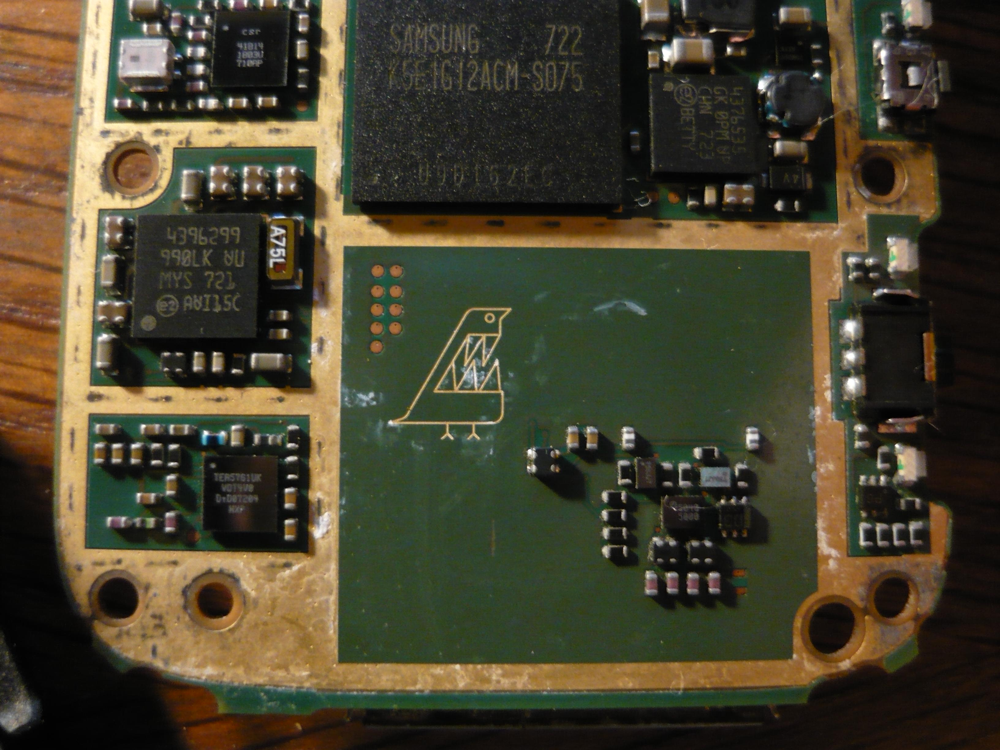
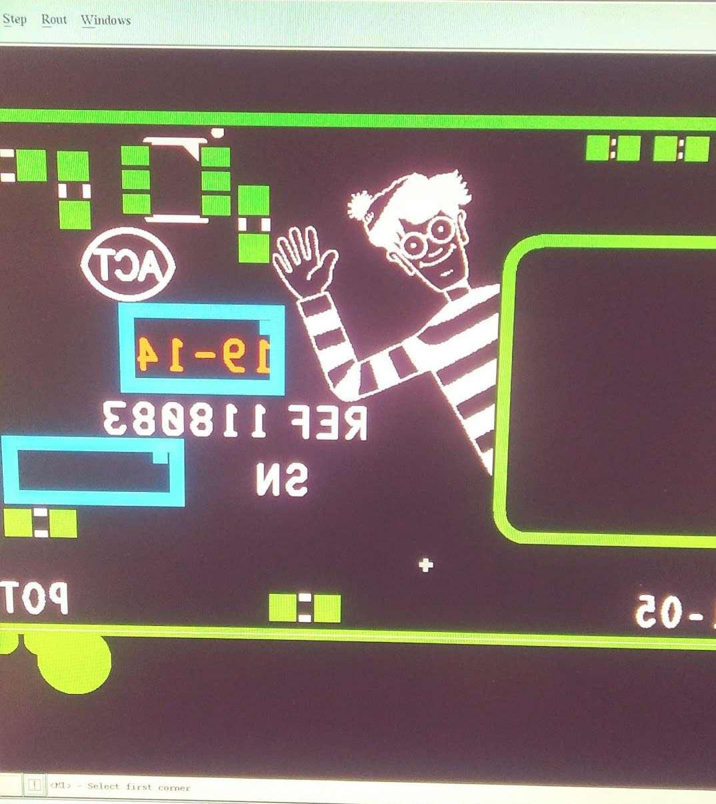
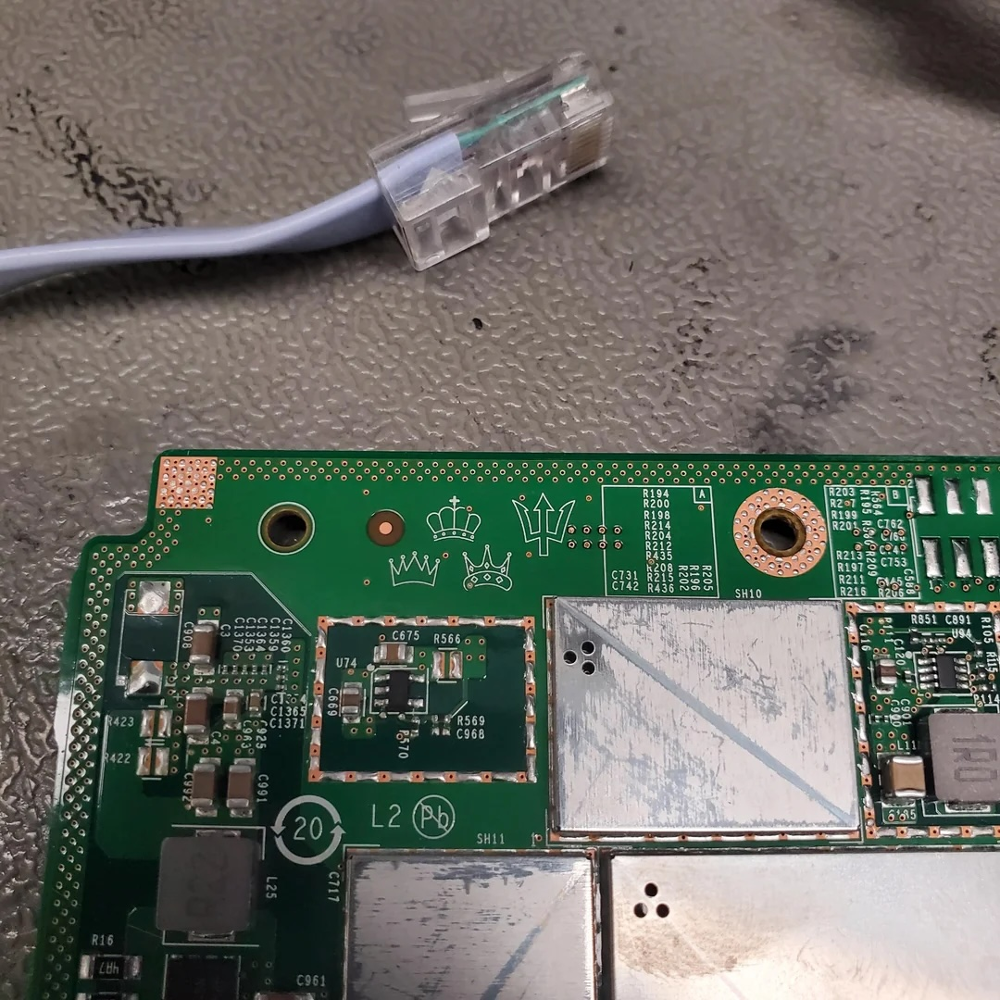
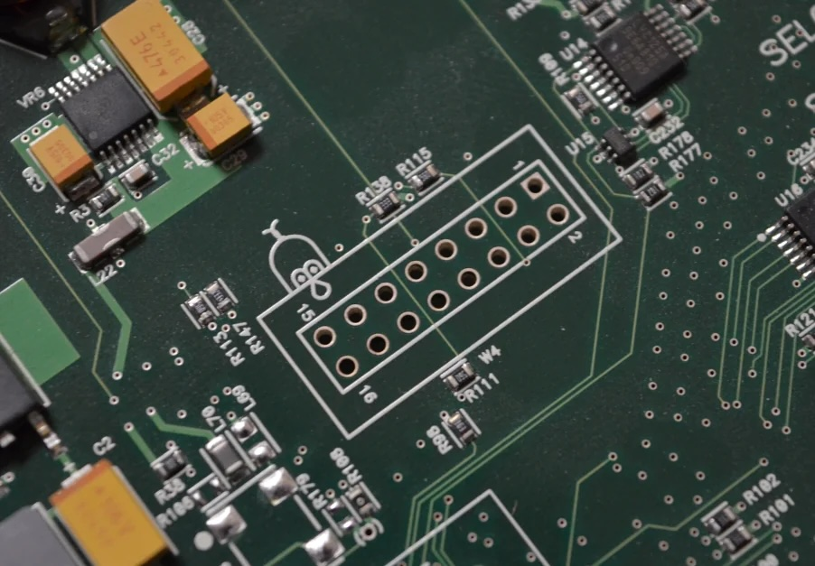
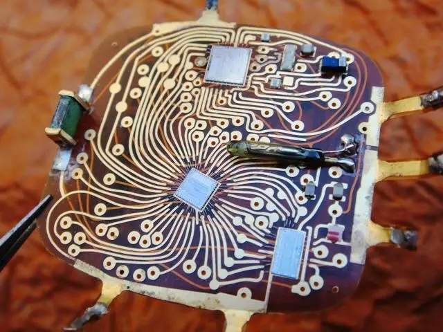

The Art in PCB Design
In class this week, my peers and I are designing our own printed circuit board (PCB) using KiCad. This custom PCB board will interface with the DS1722 temperature sensor integrated circuit (IC). At the end of the week, our designs will be sent to be manufactured so that we can use them in Lab 7.
PCBs are made up of a layers of substrate, copper, solder mask, solder finish, etc. These boards are the fundamental building blocks of any embedded system, ranging from simple boards that interface with temperature sensors to complex applications like computers, watches, and stereo systems.
While PCBs are all around us, they remain invisible to most – hidden behind their protective encasings. Yet, the time and effort that engineers invest in these intricate components are far from neglible. In fact, to me, there seems to be a level of artistry involved in crafting a PCB, in both the technical layout and silkscreen designs. Engineers have the option of investing more effort to make their designs follow common standards, scalable, and easy to understand. This in itself is a feat to be appreciated by any future engineer or maker that will use their design. However, some engineers seem to go even farther, and become artists when designing these boards; And while this art is invisible to many, others who interact with the PCB can appreciate this.
The examples of PCBs as art seems to fall under three umbrellas:
1. Silkscreen Easter Eggs
In this category, designers integrate an unnecessary design into the silkscreen layer.
The silkscreen layer is commonly used to offer some level of applicable knowledge, like the revision history or operation data. However, some designers also integrate non-essential designs into the silkscreen layer.
   
These designs could have been an inside joke for the design team, a signature, a political statement, or even a fun easter egg for the unexpected observer. Nonetheless, I think it is inherently beautiful that designer and engineers add these hidden detail for fellow engineers, fixers, and curious minds to stumble upon.
2. Craftsmanship
There is also the category of craftsmanship. This includes engineers that take pride in their craftsmanship, whether that be implementing an elegant solution to make a design more compact or completing a beautiful solder job. There’s something immensely satisfying about the precision and care that goes into attempting “perfection.”
If you have ever thought, “wow, that is a beautiful soldering job,” that would fall under this category.

This type of art also brings to mind the transparent electronics of the 90s, where the internal circuitry were a feature of the product – actively contributing to a very specific aesthetic that emphasizes the beauty of engineerings.

3. PCB Look for other Applications
There are also designs that capitalize on the PCB look, without any thought for technical purposes. These creations often embrace the classic green plated copper look, but step away from practical uses.
An example of this is the entry badge for a maker convention I went to this past summer with my brother. These badges were working PCBs – able to light up two LEDs if you soldered it. However, they were definitely designed for the primary use of a badge – being irregularly shaped and larger than needed to light up two LEDs.
Final Thoughts
Overall, these artistic details are a novelty, and show off passion for the designing process. These details engage a community of makers – people who take apart their electronics to fix problems, improve functionalites, or out of pure curiosity.
If you are interested in seeing more examples of “silkscreen easter eggs,” I’ve included some here: https://blackpanelsonly.com/articles/04secretmessages.html https://hackaday.com/2020/07/13/1975-circuit-board-was-a-masterpiece-hidden-on-your-wrist/ https://modwiggler.com/forum/viewtopic.php?t=182366 https://www.reddit.com/r/Hiddenpcbeggs/